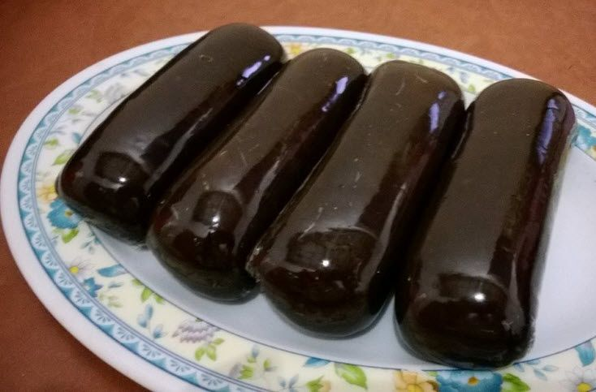
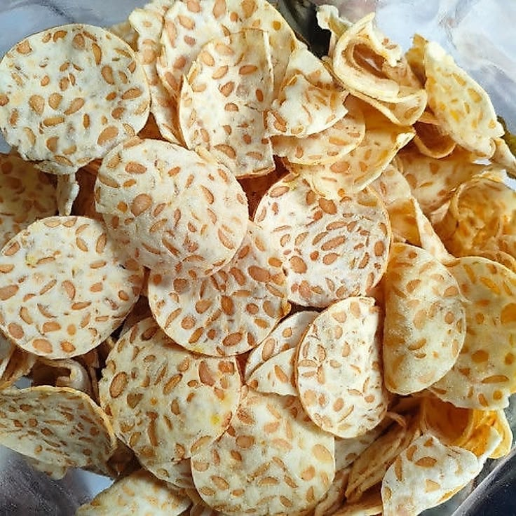

B

Bolu Kemojo
Kue bolu yang lembut dan harum.
Dipanggang dengan tekstur padat dan manis yang pas, cocok untuk teman teh sore.
- Varian
- Original, Pandan, Cokelat
- Kemasan
- Kotak isi 10 potong
- Harga
- Rp 35.000
Gurih, manis, dan wangi sagu dari Tanah Melayu.
Camilan khas Riau yang dibuat dengan resep turun-temurun, siap menemani perjalanan pulang Anda.
Lihat produk kamiOleh-oleh yang baik adalah rasa yang membuat orang ingin kembali.
RasaRiau adalah usaha camilan lokal yang berangkat dari satu keyakinan sederhana: kuliner Riau layak dikenal lebih luas. Kami mengolah bahan pilihan menjadi camilan yang rasanya masih sama seperti yang dibuat di dapur rumah.
Misi kami memperkenalkan oleh-oleh lokal Riau kepada lebih banyak orang, dari wisatawan yang singgah sebentar hingga keluarga yang rindu rasa kampung halaman. Setiap kemasan adalah cerita kecil tentang sagu, durian, dan tangan-tangan perajin yang membuatnya.
Kue bolu yang lembut dan harum.
Dipanggang dengan tekstur padat dan manis yang pas, cocok untuk teman teh sore.

Manis legit dari durian pilihan.
Dodol durian yang dimasak perlahan sampai pekat, wanginya khas dan tahan lama.

Renyah, ringan, gurih.
Camilan dari sagu yang digoreng tipis, enak dimakan sendiri atau bersama sambal.

Lumer di mulut.
Kue kering berbahan sagu dengan aroma santan yang langsung larut saat digigit.
Harga dan varian dapat berubah. Hubungi kami lewat WhatsApp untuk pemesanan dalam jumlah besar.
Resep khas Riau yang dijaga apa adanya, tanpa mengubah rasa aslinya.
Dibuat di dapur yang bersih dan dikemas rapat agar tetap segar sampai di tangan Anda.
Hanya bahan alami, jadi sebaiknya dinikmati sebelum tanggal kedaluwarsa pada kemasan.
Kata Mereka
Contoh testimoni untuk tampilan website RasaRiau.
"Bolu Kemojo memiliki rasa yang khas dan cocok dijadikan oleh-oleh. Rasanya menggambarkan cita rasa tradisional Riau."
"Lempuk duriannya menarik untuk dicoba karena menggunakan bahan khas daerah dan cocok sebagai buah tangan."
"Keripik sagu merupakan camilan khas yang menarik untuk dikenalkan kepada orang-orang di luar Riau."